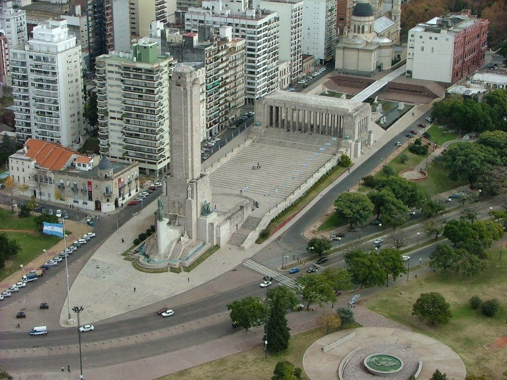

Rosario
Introducción
Rosario es una ciudad vibrante en la costa del Río Paraná, conocida por su historia, cultura y vida nocturna. Ideal para familias con niños y adultos mayores.
Actividades recomendadas
- Visitar el Monumento a la Bandera
- Pasear por la Costanera Central
- Explorar el Parque de la Independencia
- Visitar el Museo de Arte Contemporáneo (MACRO)
Gastronomía
Rosario ofrece opciones como restaurantes familiares, parrillas tradicionales y heladerías artesanales.
- Rock&Fellers (consultar Sin TACC)
- Heladerías locales
- Pizzerías familiares
Alojamiento sugerido
Apartamentos céntricos o cerca del río (Pichincha). Recomendamos:
- Hotel NH Collection Rosario
- Departamentos en zona Pichincha
Agenda de eventos
- Mercado de San Miguel (domingos)
- Fiesta Nacional de la Biela (abril)
- Feria de Productos Regionales (septiembre)
Transporte
Rosario cuenta con transporte público accesible y taxis económicos. Recomendamos:
- Tren metropolitano (conexión con aeropuerto)
- Apps de viaje (Uber, Didi)